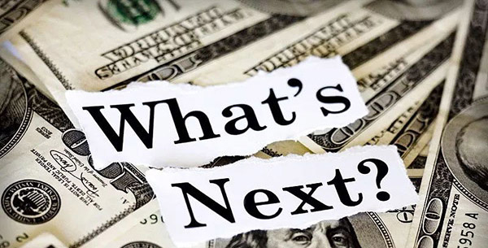

重磅｜2018上半年100大传销币清单

自从比特币问世，虚拟货币开始走进大众视野，逐步成为投资市场的新贵。但在实践中，不乏有各种以虚拟货币投资为名，行非法集资或网络传销之实的案例。为厘清此类犯罪的套路，链得得App编辑从近期开始监控、预警并编撰传销币清单。
澎湃曾于2018年5月底公布了一项法院调查称已有337名传销头目被判刑，并欺骗数千万投资者至少100亿余元人民币，其中超半数被传销头目用于个人消费挥霍一空。
为更完整地揭示传销币的骗局图谱，链得得App研究团队不仅将上述媒体披露的法院已调查入案部分传销币进行监控，还通过详细规则和标准建立，监控、搜集并整理了2018年上半年曝光的上百种传销币发生详情始末，包括虚拟货币传销案例的发生时间、传销方式、涉及金额或人数等，涵盖禹澳币、大唐币、亚欧币、珍宝币、雷达币、CNC九星、V宝、BBT、华强币、CB虚构货币、盛乐虚拟币、摩根币、贝塔币、世通元、GSM、20世纪福克斯、YTC、万福币、易币、龙币、中天币、DGC共享币、海纳币、赫尔币 黑石币、开普币、开元币、可汗币、BGB、麦格币、ITB、ROC、SMI、MMM等总计100个名称各异的“虚拟货币”。
基本套路小结
这100起案例的犯罪套路如出一辙，其本质都是“先吃后”，“后补吃”，且层层传递的庞氏骗局模式，“击鼓传花”的传销游戏，链得得App研究团队提炼的基本规律如下：
1、传销头目在国内或国外注册成立空壳公司并设立网站，通常巧立慈善、理财、游戏、医疗研究等明目，以建立大众初步信任。
2、通过微信、QQ群、讲座等形式大力度宣传某种“虚拟货币”的价值，有些甚至配以专门的公关进行网络洗白以打消会员疑虑。
3、以多至百倍收益的“高额返利”为噱头，吸引众多人的参与，经营模式通常为“交入门费”、“拉人头”、“组成层级团队计酬”这三点，不断吸纳会员会费达到敛财目的，具体形式为：
1）交纳或变相交纳入门费，即交钱加入后才可获得计提报酬或者发展下线的“资格”；
2）直接或间接发展下线，即拉人加入，并按照一定顺序组成层级；
3）上线从直接或间接发展的下线的销售业绩中计提报酬，或以直接或间接发展的人员数量为依据计提报酬或者返利。
4、最终往往因无下线加入该项目，该项目会员因不能将数字代币兑换成现金，资金链断裂而案发。
从2009年最早的“HGC”虚拟货币传销案，到近来被查获的“易物币”、“藏宝网业绩币”传销团伙，此类刑事案件数量呈逐年增加态势。因互联网传播的跨地域性，导致调查取证困难重重，各地工商部门只能就本辖区的传销活动进行监督，对全国性的传销无法从源头上切断，让部分传销团队有可乘之机，甚至多次作案。
链得得App也将从即日起，密切关注传销币动态，及时为大家披露疑似传销币的“虚拟货币”名单，同时定期进行总结。以下为链得得研究团队最新完成的2018年上半年“数字货币”传销诈骗事件汇编，文中包含100大传销币事件详情始末。
百大传销币清单
1、 MBI-易物币
MBI国际集团自称是一家多元化资产管理公司，总裁叫张誉发，祖籍潮州，马来西亚第三代华人。
张誉发团队在2015年推出一款MFC游戏，将易物币打造成虚拟货币，谎称每年会有一倍以上的回报率，通过在线商城购物、线下交易的方式，使易物币发生流通，再通过开办宣讲会进行宣传，编造投资虚拟币只涨不跌的谎言，以高额回报为诱饵大肆发展下线。截止2017年7月，MBI的传销业务会员规模达到了480万人,会员投资金额高达几百亿元。
2、M3-威达利
威达利最早出现在2012年，其宣称：只要每天点击多少个广告，就可以嫌钱。传销形式与易物币类似，进组织前需先交加盟费，3000、5000、9000不等，若拉人还可以有提成。
3、暗黑币
山寨“暗黑币”最早出现于2014年，由香港居民杜玲、刘雄联手打造，为支撑虚假“暗黑币”投资，其在香港成立了达康智能科技有限公司。
值得注意的是，这个由刘雄等人建立的山寨“暗黑币”网站与真正的“暗黑币”没有任何关联,它只是借助“暗黑币”的名声及价值大肆进行宣传,达到混淆视听的目的。（真正的暗黑币后已更名为Dash-达世币）
从2014年8月至2015年3月底，短短8个月时间就在中国内地发展会员3万余个(以累计注册账号计算)，案发前，达康公司每天入账资金达到两三千万元，总涉案金额近15亿元。
4、AC亚洲币
2014年9月，仅有小学文化的项某与做软件开发的谷某合作，两人在台湾租借服务器，将AC复利系统包装成一家致力于互联网金融研究和创新理财的民族企业，命名为“亚币集团”。
通过熟人之间口口相传的方式，以及线下“学院”培训的快速发展，项某不断蛊惑亲友投资成为会员，致使3万多人先后卷入其中，涉案金额高达1000多万元。
2015年10月，项某账户上资金已达460余万元人民币，其他骨干会员分别盈利180万元至60万元人民币，最终因2万多人的“AC维权”的群体聚合在一起，通过交流知道越来越多的内幕，遂报警。
5、恒星币
“恒星币”的套路跟上述的“暗黑币”类似，本是一款国外数字货币，却被国内的不法分子借壳疯狂利用，谋取暴利。
山寨“恒星币”最早出现于2016年4月，通过虚假宣传可获得高额回报的方式，据悉，犯罪嫌疑人通过“拉人头”传销手法售卖“矿机”，“矿机”自动生产“恒星币”并注册“恒星币”会员，以此方式大量发展下线成员。上线根据账号级别每次收取下线投资额的3%-22%作为提成。整个网络遍及全国各地注册会员达15万多个，涉案金额约1000多万元。
6、金缘购物联盟电子币
最早的时候，金缘购物联盟是一个使用虚拟货币炒作虚拟股票的网站，服务器设在美国，由李博忠、李明新二人建立，2011年1月在互联网上开盘，针对的对象是中国公众。
从2011年4月18日至2012年5月7日，该传销网络利用上海环迅平台，共收取会员用于传销的资金1425.19万元，涉及全国三十几个省区市，16000多人上当受骗，其中资金大部分转到了李杰掌握的8个银行账户上。
7、长江国际虚拟币
不法分子在国内或国外注册成立空壳公司并设立网站，大肆宣传虚构某种“虚拟货币”的价值，捏造博彩、娱乐、医疗等实体项目，以多至百倍收益的“高额返利”为噱头，鼓励会员以开拓市场、与人共享等“拉人头”的方式赚取回报，不断吸纳会员会费达到敛财目的。
8、奇乐吧
2013年10月至2014年4月之间，“奇乐吧”对外宣称是一个虚拟的可投资理财的网络游戏平台，交纳一定数量的金钱后就可以成为会员。之后，为获取更多的返利，会员即在各地大肆发展人员加入“奇乐吧”，会员经常会在各类茶馆、农家乐等集中宣讲数次，每次参与人数几十上百人。
截至案发时，近半年时间内，已有300余人参与其中，下线层级达3层以上，据主要涉案人员供述收取的“入会费”就达400余万元。
9、微视传媒电子币
微视传媒电子币在2014年的时候即开始大肆宣传，以点灯点广告为劳动表象以投资1200日收益12元…投资36000日收益240元为劳动回报的高额诱惑骗取受害人。
其自称是全球著名移动营销公司IAB的亚太区全资子公司，由香港微视传媒运营，同亚太、北美、欧洲等89个国家和地区的1300多家公司有业务往来，服务横跨金融、石油、化工、高科技、食品和汽车等各大领域。
10、分红点币
2014年下半年，张某甲利用其设立的徐州盈硕生物科技有限公司为平台，通过建立网站以万店连锁互联网店为依托，以推销深海鱼油、花栓豆、蔬菜汤、昆虫胰岛素、青春定格原液等商品为名发展会员，要求参加者以至少缴纳1万元费用购买商品的方式获得会员资格，引诱参加者继续发展他人参加，骗取财物。
截止2015年上半年期间，参与该传销组织人员达34人且层级在三级以上，其中张某甲在该传销活动中起组织、领导作用。
11、虚拟金币
2014年10月，38岁的李丰尽管只有中专文化，但特别想做大生意，于是在2014年年末成立“首席公司会员管理平台”网站，并通过这一平台出售“虚拟金币”。购买后即可成为其会员，且发展下线越多得到提成就越多。
利用这个平台，李丰共吸收到公众存款60.7353万元。为能吸引更多的人来投资，成为会员，李丰于2015年5月中旬在北京市丰台区注册成立北京时代首席投资公司，通过这次活动募集到资金169万元。
然而，李丰因投资的公司经营不善，资金链出现断裂。为挽救公司命运，李丰又以高息借款的名义，向会员吸收存款94万元。后来，因部分投资的被害人发现自己被骗，向公安机关报案而案发。
12、HGC
这是我国案发最早的虚拟货币传销案。
2009年钟某成在“广亚”传销组织中当会员时，学会了该组织“以销售网络电话卡发展下线”的传销模式，遂与他人合伙建立HGC香港瑞华公司，搭建通讯网站销售电话卡，并在交易网站中设定了一种虚拟货币，是传销组织内部流通的唯一虚拟货币。
瑞华公司实行“会员”制度，购买网络电话卡套餐需先进行网上注册登记成为会员，新会员必须先用老会员的用户名和密码登陆公司网站后才能注册登记。会员注册后拥有现金账户及电子币账户，现金账户里的钱可以转化成电子币，会员只能用电子币购买网络电话卡套餐。
自2011年3月起，传销头目钟某成所获得的资金迅猛增加，犯罪数额达3600多万，被其大肆用于个人购车、购房、入股投资房地产、消费挥霍。
13、COA
2014年1月至7月，仅高中学历的李宏钊通过陆云龙的介绍，投入一万元，注册为“COA英国合作银行”的会员。
后李宏钊开始宣传网上“COA英国合作银行”可以获取高利润，并且承诺在一定期限可以办理该银行信用卡，信用额度为入会员时交纳现金的三倍，发展新人入会可获取8%的奖金，下线发展新会员上线可获得5%的奖金。
最终以高息反利为诱饵，诱骗30人以上参加传销活动，且该传销组织层级在3级以上。
14、LFG
2010年下半年，宋丽娜在澳大利亚注册一家公司命名为“LFG”，建立一个以LFG网站为依托和平台，以原始股增值与发展下线加入后可获得高额回报为诱饵，吸引他人交费加入的传销模式。
为了顺利推进LFG项目的运行，宋丽娜联合其它伙伴依次负责市场推广发展下线，宣传、策划和网站维护，编写文案并对外宣传等，同时还聘请了澳大利亚人AMBROSE（中文名：吴道尧，在逃）充当LFG公司的总裁。
最终，LFG公司融资约人民币4000万元，扣除1000多万元作为返利外，宋丽娜将约1000万元用于购买香港加州花园圣地亚哥2号，几十万元购买古董，其余部分用于世界华商大会等。
15、SRI
2011年11月20日，林洪苗出资人民币1万元在网上找到专门注册网络公司的人，利用其从网上购买名为“屈炜奇”的虚假身份证，登记为公司的法定代表人，注册成立“SRI国际投资理财公司”。
公司成立后，林洪苗以人民币5000元的价格从网上找到福建省人黄明（身份不详）做了一套“SRI”公司理财的网络系统，通过在网络上组织、宣传，以高额回报为诱饵，发动网友购买游戏代币的方式理财。
至2013年9月案发，整个“SRI”公司发展会员注册ID号29000多个，仅涉及返利、获得奖金的会员达8000余个。林洪苗通过要求参加者缴纳费用，从中抽取交易额手续费的途径，直接或间接收取传销资金及获利900余万元。
16、Bismall
早在2016年，四川江安县法院判决的一起案件中，一名为“bismall”的网络投资项目，不法分子依托一网络商城，鼓励会员发展下线买入平台虚拟货币，达到敛财目的。
17、AHKCAP
2012年4月，陆义辉伙同高锋等人按传销网站“SMI”的模式开设了www.ahkcap.com.au澳洲汇金理财网站（下简称AHKCAP网站），并在网络上大力宣传发展会员。
同年10月后，AHKCAP网站由高锋独自经营，该传销网站宣传“购买游戏代币获得网络注册登记，推荐发展下线获得直推奖、碰对奖、领导奖、永久分红”，推销AHKCAP网站的网上全球游戏代币，并按一定顺序组成层级、直接或间接成为其下线，先后发展注册账户二万多个，有135136个户型，参与人数为6000多人。
该网站要求每个户型最少注册费用为人民币680元，总涉案金额为人民币9千多万元。
18、CPF
2015年5月初，仅高中学历的传销头目刘某经人介绍，通过购买11份虚拟份额加入“CPF虚拟货币智能高频交易系统”。
值得注意的是，该系统没有经营任何实物，以“互联网金融”为名，要求参加者以购买虚拟份额的方式获得加入资格，并按照一定顺序组成层级，直接以发展人员的数量作为计酬或者返利依据，规定每人最多只能购买22份虚拟份额，引诱参加者继续发展他人参加。
为牟取非法利益，刘某在鹤岗市向阳区金广超市附近租用门店，用于进行CPF虚拟货币交易活动，至2015年7月23日止，刘某累计发展下线超过三十人且层级在三级以上。
19、亿分
2015年9月，无业居民张某被介绍加入“环世集团亿分项目”传销组织，并于2015年10月到南通地区开展传销活动，其中“环世集团亿分项目”是以“亿分”虚拟货币为载体吸引他人加入。从2015年9月至2015年12月期间，传销头目在南通地区，涉案金额30余万元。
20、K币
2014年10月份，仅初中学历的冉金宝与王卫永、刘立超研发了“可以有多维生活网”。
该“可以有”系网络交易平台类网站，消费者需要在该“可以有”网站或者手机APP实名注册并填写推荐人后方可获得账号成为普通会员，根据推荐人与被推荐人组成上下级关系。
21、R币
2013年7月至2014年5月，骆玉玲以“香港英皇建富集团”四川地区负责人的名义，开展投资宣传。此外，骆玉玲通过朋友介绍、开宣讲会的方式宣传上述投资项目，发展下级投资者，共发展下线60人，涉及6个层级，涉及金额14.3万余元。
22、百川币
2015年6月起，杨浩（别名杨俊涛）成立福建百川币网络科技有限公司，在互联网上推销电子虚拟币---百川币。
求参加者从百川币网络平台（www.bcb800.com）以最低800元为一单的形式注册发展成为会员，成为会员后可以继续发展下线会员，并以发展会员数量作为返利的依据。通过上述分层级，拉人头，赚奖励的方式开展传销活动，现已吸纳会员90余万人，并形成了多级金字塔形传销活动。
23、K宝
K宝，原本是中国农业银行提供的用于存放客户证书及私钥的物理介质，其外形类似于U盘，又称USB-KEY；但却常常被传销或直销组织利用，用于现金的取款或转账。
24、中富通宝
2015年，陆法明（在逃）成立盐城中富通宝企业管理有限公司，并于2015年12月在盐城市金鹰2号商务楼1208室开设了中富通宝企业管理有限公司盐城市区工作室。
该工作室以宣传虚拟货币“亚洲币”理财项目为名，要求参加者以每单人民币1500元价格购买亚洲币后获得进入账户分红的资格，并按照加入的先后顺序及上级人员的安排组成层级，以各自发展人员的数量作为返利依据，引诱参加者继续发展他人投资。截止2016年5月，该公司发展10层47人。
25、红通币
红通币最早出现在2012年，红通公司规定网上交易买股票需要用“红通币”这种虚拟货币，开户需要的个人身份证、手机号、QQ号和购买股票的钱，当用户挂牌的股票被系统卖了，扣除公司5%的手续费，之后多余部分就是营利。此外，买红通公司的股票最少买660元，最多买12540元的，另外每月还要交110元的广告费，多推广、多往下发展就多给推广人的钱。
26、雷恩斯电子货币
2015年7月，张宝明到西宁市后伙同其他人，对外宣称“雷恩斯虚拟电子货币”项目，称该项目是来自美国的新型电子货币方式，目前正招募2500万名会员，将在美国纳斯达克上市。
2015年7月至12月期间，张宝明在麒麟湾、西宁市第二十二中学组织宣传“雷恩斯虚拟电子货币”，发展并形成人员达130余人，层级达9级的网体。
27、环球贝莱德一号理财币
2014年10月，黄某甲通过互联网购得13.5万元的虚拟币后，以“香港环球金融投资集团”的名义，在互联网上注册账号加入“环球贝莱德一号”理财模式。
为了获得得益，传销头目以拉人头分红计酬的方式发展下线，然后将虚拟币卖给下线获得利益，这样下线就继续发展他人加入该模式。截止2015年8月，黄某甲在绥化市北林区发展70余人加入会员。
28、格拉斯贝格
格拉斯贝格最早出现在2014，一开始被包装为网络”格拉斯贝格”理财项目。
每个会员收取下线的投资款后，可以用其帐户内电子币给下线注册会员，或通过该网页将其帐号内获得的电子币交易他人，从而获取非法利益。
截止案发时，其中一个传销头目王文霞引诱参与”格拉斯贝格”理财项目人数达43人且层级达到十一级。后因无下线加入该项目，该项目会员不能将电子币兑换成现金而案发。
29、BCI
这同样是一个借壳名人的传销理财骗局。BCI金币复利理财项目，对外宣称由李嘉诚创办，只需交纳1500元即可成为公司会员，注册成为会员后有两种获利模式。
2015年12月份至2016年3月份期间，陆续发展多人加入，会员层级3层以上的达人百人，非法获利37.7万元。
30、M币
2013年11月，邓某和宾珩妹经介绍购买马来西亚MBI国际集团发行的网上虚拟货币（又称M币），投资数额由100美元至5000美元不等，形成金字塔式排列，向下发展下线吸收新会员，可以得到公司10%的直推奖，只奖一级，形成两条线走路，两边平衡的，还可以得到公司4%的领导奖和10%的对碰奖，两个奖项只奖6级以内的，以此类推，其发展下线人员有利润提成，发展越多提成越多。
31、翼币
翼币是在“心未来互联平台”内可以消费（必须与人民币搭配使用）的一种虚拟货币，成立于2015年6月，总部在石家庄。
心未来互联平台是免费加入的，成为会员后可以通过网上签到挣积分，积分是以云翼币的方式发放给会员，会员发展下线后可获取晋级的机会，可增加购物限额，会员可持现金凭积分到需求馆或大河间商务中心的易某购买商品，半个月内在把购物款100%返还给会员。
32、EV币
EV币产品项目是“BFG”集团公司2015年12月推出的是虚拟货币，根据客户投资资金的数额分为银卡会员、金卡会员、钻卡会员，不同级别的会员均可获得静态收益，而发展下线人员投资购买“BFG”集团公司的EV币产品则还可以获得动态收益（推荐奖励和对碰奖励）。
截止至2016年5月网站关闭时，杨庆涛直接或者间接为“BFG”集团公司至少非法吸收资金累计达人民币978400元。
33、业绩币
不法分子在国内或国外注册成立空壳公司并设立网站，大肆宣传虚构某种“虚拟货币”的价值，捏造博彩、娱乐、医疗等实体项目，以多至百倍收益的“高额返利”为噱头，鼓励会员以开拓市场、与人共享等“拉人头”的方式赚取回报，不断吸纳会员会费达到敛财目的。
34、FIS
2016年，陈伟娟和周敏燕将自称是“FIS第一世界金矿”平台介绍给浙江省仙居县当地居民，并邀请讲师到仙居为投资者授课介绍FIS项目。推荐新人加入可获得相应比例推荐奖、对碰奖等，并向投资者宣传三个月回本，六个月能获得投资款五倍利益，以高额回报和佣金为诱饵，引诱他人发展下线。
2016年4月左右至7月左右间，陈伟娟通过上述方式直接或间接发展下线40人许，层级为10层左右，共收取下线投资款120余万元。
35、U币
2014年5月，泰国优趣集团在境外搭建U币虚拟货币网络交易平台，宣称U币项目合法经营并受监管，投资U币项目具有升值前景，同时以投资者发展下线会员，按照层级顺序可获取动态利益，引诱投资者不断发展下线。截止2016年2月，李光晨在中国直接或间接发展3723名会员，会员投资金额共计人民币7400万余元。
36、ES
2015年，广东无界商盟公司的推出“网络黄金”，声称总数量恒定不变，随着参与购买黄金积分的会员越来越多，黄金积分ES会因稀缺性而升值，在公司设置的ES交易大盘上，ES积分的价格每天有大约2%的涨幅。
据警方统计，自2015年10月推出“网络黄金”后，只用了半年时间就发展会员50多万人，涉及资金109亿元。
37、藏宝网业绩币
2016年6月，李权恒等人通过邱和平，将“藏宝网”平台系统引入四川，该平台的模式是通过虚拟股拆分和发展下线来获取利润。
邱和平加入平台成为会员后，为谋取非法利益，于2017年初通过微信等互联网渠道对外大肆宣传“藏宝网”平台，并直接发展了被告人任玉琼为骨干下线。为发展更多会员以谋取非法利益，不断在邛崃市开展通过微信和面对面讲课等传播手段。
截止2017年5月，李权恒直接和间接发展428名下线，其余4位传销骨干分别发展100-428人不等。
38、汇爱电子币
2012年12月，黄某甲在湖南省注册成立安化县汇爱茶业有限责任公司，因公司经营不善停业。后在2014年 8月18日，黄某乙委托广东财经大学李某某为公司研发建立网络投资服务平台，之后公司利用互联网、微信群等途径展开宣传，发展他人参加。
自2014年8月开始，汇爱公司先后在湖南、山东、浙江、天津、北京等地发展会员，截止2016年3月14日系统显示，茶客个数146832、茶商个数17643，中级茶商个数5639，高级茶商个数754，公司总业绩760650000元。
39、建业盘电子币
2013年8月，郭中飞经他人介绍加入“云数贸”组织，后发展其妻子段必美为其下线人员。二人以在施甸县甸阳镇×商铺为据点，利用当面讲解、微信等方式向他人宣传“云数贸”公司即将上市获利、股票价值增值有高额回报，能造就当代富翁宣传言语，要求参与者缴纳500元、1500元、3000元、4万元、1万元等不同的单个点位费购买“会员盘”、“董事盘”、“建业盘”的原始股份，并办理“云商联盟商城云卡（A、B卡）”。截止2015年12月， 案中涉及会员60余人，层级已达五层。
40、补助币
2014年8月1日，王启才与合伙人廖铮在长沙市工商行政管理局注册成立了湖南崀霞实业有限公司，2015年5月将服务器地址设在美国。
由于会员可以通过发展下线得利，并且可以从下线不断发展的多层次下线中得利，会员不断以人传人的方式介绍他人购买公司产品取得公司会员资格，并鼓励和帮助自己的下线会员不断发展新会员。
为了规避传销嫌疑，2015年7月前后，王启才要求极乐软件公司对公司会员系统内的“网络结构图、激活会员资料、汇款记录等”进行修改屏蔽，只能显示当前月数据。同时，为了逃避监管，采取两套财务系统。
41、高频交易币（HFTAG）
2014年9月份，刘洪建组织他人进行高频投资活动，宣称HFTAG集团成立于2011年，是一个跨国性的公司，总部在美国，公司宣传的非常华丽，说是70%都是机器参与炒股，在股市里用机器交易，瞬间套取微利，声称2014年7月启动中国市场，8月1日正式开始交易。
参与者要求以缴纳18000元或19800元费用获得加入资格，并按照一定顺序组成层级，以发展下线的数量作为返利依据，引诱参与者继续发展他人参加，骗取财物。截止2015年8月份，刘洪建吸收投资金额4312800元。
42、开心复利币
2014年10月，马某通过广西一家网络公司建立“开心复利理财”的投资平台（后期更名为“K币交易系统”，网址分别为http://vip.kxsc88.com、http://kb.zstx100.com及http://xgzs.kxsc88.com）
“开心复利理财”会员除能获取网络的静态分红外，还可以拿动态分红，即直推奖（直接推荐人加入所获得的返利）和见点奖（下线在推荐的人加入所获得返利，最高可拿九层）等奖励，以此鼓励会员发展更多下线。
截止2015年9月，马某总共非法获利1203.6万元人民币，注册会员3.9万人。
43、快联网站虚拟货币
2012年，快联公司以营销软件系统为名，以赠送快联网站虚拟货币、链接商家获取合作分红收益、公司上市获取股权收益为诱饵。
要求参加者缴纳498元成为移动商务会员、缴纳29800元成为智能建站站长、缴纳10万元至100万元不等的费用成为区域代理商，并按照上下线推荐关系组成层级，直接或者间接以发展人员的数量作为返利依据，引诱参加者继续发展他人参加，骗取财物。截止2015年9月，公安机关查获快联公司共13.99万元。
44、世华币
在这个传销币案件中，传销头目曾试图于生物医药公司进行结合，传销头目李洪英、蒋秀英是上海春芝堂生物制品有限公司的会员，2016年1月份，为给春芝堂客户增加收入，提出运作“春芝堂嫁接世华币”，其中李洪英、蒋秀英从中可获得12%至16%的提成。
后因世华币涉嫌集资诈骗事件败露，这一计划被叫停。当时网络上盛传，世华币投资五万，二百多天后可反两倍利润。
45、恩特币
2012年，古新华、张爱文分别介绍，在广西壮族自治区北海市银海区，以缴纳6.98万元费用加入代号为“阳光工程1040资本运作”的传销组织。
2016年7月起,“1040工程”传销组织为进一步牟利,虚构购买能生产虚拟货币“恩特币”的“矿机”可以获取高额利润的信息,诱惑组织成员进行投资，最终涉案资金达100多万元。
46、CPM
2015年3月，王某指使他人开发了“DEMWK”会员系统，并租用了服务器搭建了“DEMWK”网站，以经营“DEMWK新加坡外贸进出口公司”。
公司以发行的虚拟货币CPM为名，要求参加者按照一星至六星不同的会员级别缴纳人民币700元至35000元不等的费用购买激活币获得加入资格，截止2015年8月，邹蔚榕在沃客理财网站中共有44个账号，下线层数为291层，直接或者间接发展下线会员55065人，获利人民币1854222元。
47、克拉币
克拉币最先出现在泰国，2015年传销活动进入中国以来，已在全国数十个城市开展违法犯罪活动，其自称“五军资本“。
链得得App编辑注意到：泰国确有五军集团，该集团成立于2014年1月7日，注册资本500万泰铢，但这家集团并没有一家名为“五军资本”的下属公司。
2016年6月7日，该组织在泰国举行万人启动大会上一位营销人员说，现在开户的数量已突破6万，如果这一数字属实，即便按照最低开户门槛7000元人民币保守计算，至少有4.2亿元人民币流入克拉币系统。
48、至尊币
2016年5月初，某公司在衡阳市珠晖区设立某办事处，吴晓军为该办事处负责人。推出以认购虚拟至尊币作为发展下线人员的新模式。
会员以人民币2.1元可在公司网站上兑换一枚至尊币，按照兑换至尊币的数量不同可兑换小中大三种挖矿机，挖矿机可以从公司网络上、下线会员投资额、挖矿业绩、管理奖中获取利益。
49、五华联盟虚拟币
不法分子在国内或国外注册成立空壳公司并设立网站，大肆宣传虚构某种“虚拟货币”的价值，捏造博彩、娱乐、医疗等实体项目，以多至百倍收益的“高额返利”为噱头，鼓励会员以开拓市场、与人共享等“拉人头”的方式赚取回报，不断吸纳会员会费达到敛财目的。 50、美盛E
2014年10月，石英、梁永建、罗开等八人，经合谋后共同推出“美盛E”网络理财项目。通过各种途径向社会公开宣传该项目，谎称“美盛E”理财是英国美盛集团推出的全球互联网金融理财产品，以高额利息和佣金回报为诱饵，引诱他人投资加入成为会员并不断发展下线。
截止2015年7月，石英、梁永建、罗开新等人在公共账号下直接或间接发展的下线人员240人以上，层级达八级，涉案金额2200万元以上。
51、中华币
2016年，姚琪宏等11人以“中兴同寿公司”的名义,以销售“中华币”赠送SOD产品为幌子,通过制定会员制度和奖金制度,引诱他人为获得高额返奖而不断发展下线会员,骗取他人财物,扰乱社会经济秩序。
至案发,该传销组织已形成了包括常德在内的,遍布全国的会员网络,后台数据中会员层级达500多层,下线会员逾50000多人,涉案金额达2.6亿余元。 52、米米虚拟货币
不法分子在国内或国外注册成立空壳公司并设立网站，大肆宣传虚构某种“虚拟货币”的价值，捏造博彩、娱乐、医疗等实体项目，以多至百倍收益的“高额返利”为噱头，鼓励会员以开拓市场、与人共享等“拉人头”的方式赚取回报，不断吸纳会员会费达到敛财目的。
53、FIS
2016年3月底，周敏燕、陈伟娟将“FIS第一世界金矿”大肆宣传，陈伟娟回到仙居后，积极宣传FIS项目，并邀请讲师到仙居为投资者授课介绍FIS项目。
2016年4月左右至7月左右间，陈伟娟通过上述方式直接或间接发展下线40人许，层级为10层左右，共收取下线投资款120余万元。
54、世界云联云币
世界云联“云币”传销组织做了一个“大局”。在该组织中，头目王某争成立陕西华尔道投资管理有限公司后，招聘多名员工，成立了财务部、技术部、客服部、宣传部、审核部等部门，各部门分工合作，在王某争的安排下维护公司正常运转。
警方介绍称，王某争是一个极其善于包装的掌控人，为了让加盟者对公司深信不疑，他将在深圳和西安繁华地段租赁的办公用房装修的极其奢华，每年的租金近百万元。多数加盟者被这种假象所迷惑，觉得他们真是事业有成、飞黄腾达，以至于全国20多个省市400多万人怀抱着发财梦，纷纷投资加盟了“世界云联”。
55、利物币
2015年12月底，孟文雅参与投资利物币项目，对外宣称：利物币是德国磐石基金开发的第二代虚拟货币。如果要投资利物币，投资者可以进入利物币官方网站进行注册申购，一名投资者最少要交600元人民币才能获得购买1000枚利物币申购激活1台矿机的资格。截止2016年5月底，杨某不再回收利物币投资者账号中激活的利物币，利物币投资链崩盘，大量投资者损失无法追回。
56、维卡币
2015年6月份，苏毅、张轩经介绍加入网络虚拟货币维卡币传销体系，以其经营的中山市东区水云轩鲜榨灵芝店为传销窝点，结伙对外推广、宣传维卡币，夸大投资维卡币的盈利前景及合法性，隐瞒维卡币无法自由兑换现实货币的事实，引诱他人购买“条码”注册会员账号，以此获取加入资格并继续发展他人参加，按照发展顺序组成上下级关系，以下线直接或者间接发展人员的数量作为计酬和返利的依据，骗取财物。 57、马克币
2015年7月份，于某、杨某经杨芳介绍加入挪威马克币传销组织，以缴纳150欧元至25000欧元不等的金额购买虚拟马克币筹码能够参与分红、升值为诱饵发展会员，并以发展会员的数量、会员投资金额作为计算返利依据，引诱参加者继续介绍和发展下线形成层，最终于某某、杨某发展了30余人形成三层级以上。 58、善心币
2015年以来，陈先锋等人借鉴云互助的多级虚拟资金盘模式，授意技术人员研发改进成为互助模式加级差模式合成的新型传销模式——“善心汇众扶互生会员系统”（又称“善心汇新经济生态系统”）。截至2017年7月24日，陈先锋下级会员13层7000余人，已支出善种子3363个，剩余善种子1个，已支出善心币22063个，剩余善心币1个，已支出善金币350400个，剩余善金币0个，管理钱包已支出173200元，管理钱包剩余216826元。
59、无极币
2013年5月，吴某、潘某在香港成立无极币集团公司，并建立了无极币网站，该公司没有任何实际经营活动，以投资开发无极币等虚拟货币为名。在我国内陆通过网络宣传、讲课、介绍等方式不断发展下线，共同组织、策划、开发无极币，要求新会员必须经老会员推荐或者填写推荐人。
60、ATC
不法分子在国内或国外注册成立空壳公司并设立网站，大肆宣传虚构某种“虚拟货币”的价值，捏造博彩、娱乐、医疗等实体项目，以多至百倍收益的“高额返利”为噱头，鼓励会员以开拓市场、与人共享等“拉人头”的方式赚取回报，不断吸纳会员会费达到敛财目的。
61、IPC
2012年年底，叶影彤经介绍加入“IPC国际集团”网络传销，随后发展了贵港市覃塘区三里镇的居民谢某。
至2014年9月份，谢某1在覃塘区直接或间接发展了至少6人参与了“IPC国际集团”网络传销，吸收并向其上线叶影彤转移了大量的传销资金。至案发时止，被告人叶影彤发展的直接或间接下线累计超过三十人且层级在三级以上。
62、中央币
2016年，王某从盛宝集团李某宝处购买了中杉数字市场有限公司，并开始发行名为“中央币”的虚拟货币。
中杉公司主要通过召开招商大会，派讲师到各地讲课，并利用互联网、微信平台等方式推广“中央币”，以邀约他人购买“中央币”为幌子，引诱他人缴纳6000元、18000元、60000元三个等级的入会费分别成为该组织的黄金会员、白金会员和钻石会员。
但“中央币”没有实际价值，“中央币”的价格都是中杉公司通过后台控制，会员通过静态奖励无法获利。
63、五行币
2015年5月份，严某、丁某经推荐，向宁夏云数贸贸易有限公司交纳加盟费三万元并取得该公司授权，后两人在贺兰县注册成立宁夏云数贸贸易有限公司贺兰县日用百货分公司。
截止2017年6月，两人先后直接或间接发展三十余名下线。严某从中非法获利6600元,丁某从中非法获利6000元。值得注意的是，“五行币”仅为“五化联盟”传销组织中的方式之一。
64、汇爱币
2011年6月，张某加入亮碧思集团（香港）有限公司传销组织汇爱团队。该组织以推销精油、化妆品、红酒等产品为名，要求参加者缴纳费用和购买商品获得加入资格，并以获取发展下线和人员的资格，然后以发展人员的数量作为计酬或者返利依据。截止2013年12月，该传销组织人数在30人以上且层级在3级以上。
65、航海币
2016年6月，邱和平通过被告人李权恒、闫新让、屈红玲的介绍，将“藏宝网”平台系统引入四川，该平台的模式是通过虚拟股拆分和发展下线来获取利润。
被邱和平加入平台成为会员后，为谋取非法利益，于2017年初通过微信等互联网渠道对外大肆宣传“藏宝网”平台，并直接发展了被告人任玉琼为骨干下线，并通过微信和面对面讲课等传播手段，在邛崃市，层级达43余层。
截止2017年4月，李权恒直接和间接发展428名下线；闫新让直接和间接发展428名下线；屈红玲直接和间接发展285名下线；邱和平直接和间接发展74名下线；任玉琼直接和间接发展67名下线。
66、禹澳币
2017年10月，郑某、勾某、张某等9人，以“区块链”为噱头，在互联网搭建“消费时代DBTC”网络交易平台，虚构“禹澳币”等所谓虚拟货币作为交易产品，利用微信和网络公众号向社会不特定人群推送，以高额收益为诱饵，招揽群众注册成为会员、缴纳资金。
郑某为扩大影响，采取多种方式包装、宣传，如高薪聘请外籍男子做旗下公司的董事长，将自己打造成具有外资背景的“高科技跨国企业”，并先后到国内外多地召开推介会。通过上述方式，该团伙在3月28日至4月15日案发不到20天的时间内就非法敛财8600余万元。
67、云鼎云币
2016年，云鼎云币在国内开始大肆宣传，身称拥有全球第一家欧盟颁发的电子货币发行牌照，由世界顶级经济学家团队组成。然而其激励途径跟传销并无区别，并被列入 2017年央视公布的350个资金传销组织名单。
68、亚欧币
2016年，亚欧币宣称要打造中国虚拟数字货币第一品牌。为了吸引更多的人参与购买“亚欧币”，跨亚欧公司设置了一个“分享收入”，也就是说，拉人头参与投资“亚欧币”，就能够获得返利分成，而当拉来的人投入的数额足够大，就可以成为代理，享受不同级别的返利。
短短一年的时间，“亚欧币”吸引了4万多名参与者，吸收资金达到40多亿元。 在涉案的40多亿元中，有约10亿元用于会员高额返利，约27亿元用于会员提现。有超过3亿元被犯罪嫌疑人刘某和夏某荣等非法占有，而在警方收网时，跨亚欧公司已入不敷出。
69、珍宝币
2013年12月，周某加入美洲矿业公司（后更名为美国富豪集团）传销组织后，将该传销组织引入本市。
以购买美洲矿业公司生产的琥珀赠送积分（后更名为珍宝币），积分增值后可交易获利为由，发展至少6人下线人员交纳13000元、32500元、65000元人民币不等的“会员费”加入该传销组织。
截至2015年9月3日被查获时，该传销组织在临安发展的成员达100人以上，层级达14层以上，收取传销资金780余万元，周某通过“直推奖”、“碰碰奖”、“市场补贴”等名义个人非法获利10余万元。
70、雷达币
雷达系统自2014年7月发行，据称每月5%、年化高达60%—80%的高收益（日复利）。
为激励更多人参与其中，雷达系统引进推广算力机制，只要推广，就相当于银行的揽储，在不损害、不分配新朋友任何利益的情况下，每天为我们分红雷达币。目前国内已经有人通过团队累积和倍增，实现每日800余枚雷达币的增发。
71、CNC
2016年CNC横空出世，其宣传称CNC九星国际互助联盟是CNC一个全新的金融模式，互助金融+中期虚拟货币+商城和货币上市。
九星互助传媒的互助额度为2000—20000元，一共分为九星，每位会员每天都将得到每天2%的互助金。每逢双日，会员有两次获得点击抽奖的机会，每次1000元的奖励。每经历一轮互助后，级别就会上升一星。
72、大唐币
不法分子在国内或国外注册成立空壳公司并设立网站，大肆宣传虚构某种“虚拟货币”的价值，捏造博彩、娱乐、医疗等实体项目，以多至百倍收益的“高额返利”为噱头，鼓励会员以开拓市场、与人共享等“拉人头”的方式赚取回报，不断吸纳会员会费达到敛财目的。
73、V宝
2014年7月，V宝（又作Vpal）上线后，组织者便开始大力宣传，称V宝是新一代虚拟货币，购买持有V宝后，便得到相应的算力，即可以获得相应的V宝币回报。
但与其他的虚拟货币不一样的是，V宝的最主要推广渠道并不在线上，而是走的是线下宣传；如比特币等最早的玩家多为金融、IT业人士不同，V宝的受众一开始就多为企业主、个体商户等中年人，在江浙地区尤盛。
在高峰时期，V宝每天的交易资金量都在3亿元以上，截止案发V宝卷入的玩家人数多达10万之众。
74、BBT
2015年BBT出现时自称虚拟货币理财项目，宣称只要投资800元就能永久受益。
BBT金币的宣传资料显示，它的收益模式主要有两种：静态收益是指造币机的生产收益。一台造币机每天产8个币，其中65%即5.2个币累积到100个可以兑现成人民币（1币=1￥），35%即2.8个称金种子（与币一对一兑换），累积到800个可以自动购买一台造币机。动态收益是指推荐会员拿“奖金”，直接推荐会员奖100币，外加10代内产能收益10%，规则是推荐1人拿1代，推荐2人拿2代，以此类推10人拿10代，一天10000币封顶！这是典型的传销手法——拉人头拿收益。
75、华强币
2015年3月间，张春普与张陆洋、赵运等人，在北京东城区银河SOHO大厦A座10623、10625室，宣传”华强币”项目。张春普以股权众筹为名，与参加者签订协议，要求参加者缴纳1万元以获取股东资格，并要求参加者继续发展下线，以发展下线的人员数量及层级作为返利依据。
截至2015年5月案发前，参加股权众筹的人员数量达490余人，且已形成3个以上层级，缴纳传销资金累计达人民币490余万元。
76、CB虚构货币
2015年4月，甘某乙、岳某伙同崔展嘉等人，利用崔展嘉为CB国际（香港）财团和亚投行国际（香港）财团董事长的身份，设立了珠海市展嘉资产管理有限公司。
并在未取得有关部门批准吸收资金的情况下，推出“CB全球创富方案”，承诺客户投资后从星期一到星期五每1天可以得到投资额1%的投资回报，且会员介绍、发展客户投资可以得到客户投资金额的10%为介绍费，采取开推介会、播放宣传片的方式，向社会公众广泛宣传，吸引大量群众投资成为该公司的会员。
77、盛乐虚拟币
盛乐投资有限公司（下称盛乐公司）在中国无工商注册登记，其所销售的“盛乐原始股”未经中国证监会核准。
会员通过登录虚假盛乐公司网页“cn.shengle.cn”注册会员帐号申请入会，会员分为四个等级，分别是一星级至四星级，会费为500美元、1000美元、2000美元、4000美元，美元换算人民币汇率为1：7，会员注册会员帐号后，所缴纳现金以虚拟电子币形式显示在盛乐公司网页并用于股票交易（1美元换算为1个电子币）。
78、摩根币
JPMCOIN 摩根币诞生于2014年11月1日，全球同步运行。是一种无需中央机构，交易转账方不依赖信任机制的点对点电子货币。
收益模式，大约为以下两种：静态收益，来源于所谓的“云矿机”虚拟机器，投资者投入1000元可购买一台虚拟机器（即一个账号），一台云矿机的寿命为200天。动态收益是每推荐第一名玩家，可拿一代玩家每日产能的10%，推荐第二名玩家，可拿二代玩家每日产能的10%，以此类推，推荐10人，可拿10代会员每日产能的10%，10000封顶，也就是所谓的日进万金。
79、贝塔币
在“摩根币”被举报为传销币后，2015年11月15日，Jpmcoin摩根币系统正式更名成Betacoin贝塔币，并进入中国虚拟货币市场。经营模式仍与摩根币类似，利用微信朋友圈进行欺诈，大都从亲戚朋友入手，宣传高回报、发鸡汤文，编织发财致富梦，打着虚拟货币和静态受益的幌子，主要目的就是拉人头加入，吸引大量群众成为贝塔币的会员。
80、世通元
2012年年底，叶影彤经介绍加入“IPC国际集团”网络传销，随后发展了贵港市覃塘区三里镇的谢某为下线。
从2012年年底开始，谢某1以推销“IPC国际集团”B计划、珠宝计划项目为名，投资“世通元”等虚拟货币，以只要入股18870元或16900元后即可每月获得高额分红为诱饵，在覃塘区大力发展他人加入“IPC国际集团”网络传销，并以直接推荐一人加入可获得960元提成，推荐人再推荐他人加入可获得16元的领导奖作为计酬依据，形成上下线层级关系。
81、GSM
聚宝金融集团（英文简称：GSM）在2015年4月横空出世，自称注册于巴拿马、总部设在芝加哥，海外注册资本高达10亿美元的大型外汇投资企业，并且获得了澳大利亚证券投资委员会（ASIC）的金融服务牌照。
其承诺的回报率极其高，仅以最低投资额2000美元为例，投资者在18个月内，可以获得每个月8%的回报，发展下线可以获得另外8%的提成，每月再获得至少5%的交易利率回报，而等级越高，回报率也会越高。如果投资额为第三等级的10000美元，在18个月后，其回报率达到了600%。
但仅仅在一年后，“聚宝金融” 人间蒸发，其涉及的金额达到400亿元。
82、20世纪福克斯
这个传销案是典型的假借国外公司之名，忽悠国内投资者。
2014年12月9日，互联网上有一家自称为“20世纪福克斯环球影业投资集团”的公司，面向社会发行一种“影视文化资产包”，对外宣称这是一种文化艺术品的金融衍生品，是基金和股票的结合体，投资者可通过投资影视作品资产包来获取增值分红收益。
83、YTC
YTC来源于马来西亚，其自称隶属BCM金融控股有限公司，公司的名字叫BCM ( BLUE CHIP MARKET意即蓝筹股市场)，其母公司是香港银泰金融控股集团。
其宣传称有应用商城，有电子钱包，点对点交易，平台跟挖矿系统互转，挖矿达到一定数量上源币网(已对接) 注册免费赠送矿机一台，直接分享会员获5%的算力分红(推荐微型矿机者直接分享获2%)。
84、万福币
这也是一起传销团队多次作案的事件。
2014年，美籍华人刘某创办美国未来城，总部设在美国洛杉矶。该公司通过互联网销售虚拟数字货币为名，专门针对华人进行传销诈骗活动。
2014年4月，刘某、裴某、闫某等三人以销售虚拟数字货币“网络黄金”为名进行网络传销活动，在中国大陆发展会员几十万人。
2015年8月，三人因利益分配不均分道扬镳后，刘某又和重庆人冉启均合作在中国大陆地区开展美国未来城虚拟数字货币“天合积分”传销活动。
2016年3月5日，刘某又启动虚拟数字货币“万福币”传销项目，截止至2016年4月27日公安机关查获为止，不到两个月时间，该传销项目就吸纳会员13万余人，疯狂收取传销资金近20亿人民币。
85、易币
易币的始作俑者是俞某某及其“浙江物联”科技有限公司。
2016年3月22日，他们专门成立浙江国富易通信息技术有限公司做市场推广。公司均设在永康总部中心，以假借上市公司为支撑。其对外宣传，中国网超项目是经过全国电子商务应用人才培训工程办公室的授权，是一项受中央五部委委托的民生工程，“易币”是中国自行创立的第一种数字货币。
86、龙币
龙币（简称：DT）是由DragonEx发行的一种基于以太坊ERC20标准的代币，每一枚在平台存放的龙币均享有项目分红权。其经营方式与大多传销币类似，分静态和动态收益结合。
87、中天币
2017年2月，刘元君伙同李俊易、丁海波、李祥华等10人，在互联网上开辟网站，组织团队通过线上、线下推广“兴中天互助平台”方式发展会员，以“投资返利、拉人返利”的形式，在全国范围内大肆开展传销活动。
88、 DGC共享币
一个包装的高大上的传销币项目，谎称来自韩国，是韩国皇室的后人操盘的，还跟三星公司有关联，2016年大肆通过微信进行宣传，高利率的诱惑欺骗不少中老年人入局。
89、海纳币
2015年一家名为广东省财富海纳(集团)的虚拟货币正开始起盘，该公司宣称其旗下有多家分公司，可谓实力雄厚。而该项目是一个新的理财平台，是一个没有输家的真正财富创造平台。其收益也分为静态收益和动态收益两种。
静态收益为投资600元到60000元不等，级别分为菜鸟、屌丝、白领、土豪、企业家五个级别，投资越多则级别越高，回报也越多。
动态收入是其亮点，按级别不同每发展一个下线会得到不同比例的推荐奖。随着人数的叠加，还会有合作奖、共赢奖等你来拿。
90、赫尔币
“赫尔币”原本是英国赫尔市推出的一种虚拟数字货币，但是它没有进入中国。国内的“赫尔币”其实是一场网络传销骗局。“赫尔币”的动态收益，除了推广的所谓10%“直推奖”，还有根据投资者每一次“报单”，也就是每一笔投资金额的大小，进行抽成的1%到3%的报单奖。具体来说，一万元可以抽成1%，三万抽成2%，五万抽成3%。
91、黑石币
2014年，黑石币假借美国黑石集团之名，自称是发行的第一枚网络虚拟货币，2015年11月底进入中国市场。
动态收益是最大收入来源，每推荐一个人，系统就奖励150金币。推荐第一名玩家，可拿一代玩家每日产能的10%，推荐第二名玩家，可拿二代玩家每日产能的10%；以此类推，推荐10人，可拿1-5代会员每日产能的10%,5-10代会员每日产能的5%。
92、开普币
开普币最早出现在2015年7月，1开普币兑0.73美分。短短半年时间上涨了146倍。自称在全球40多个国家同步推广和交易，并保证在未来的几年，开普币预计上涨几百乃至几千倍。然后，在2017年开普币即被列入央视资金传销组织名单中。
93、开元币
开元币OGC最早出现在2016年，自称开创了虚拟货币的新纪元，凭借着先进的区块链技术，每次交易都能生成新的模块，比比特币更安全，防盗性能绝对一流。
但在2017年开元币也被列入央视资金传销组织名单中，目前未能从公开资料查找到具体经营细节。但中国裁判文书网的多则刑事判决书中有提到：原参与过“开元币”传销模式的成员，后有多数人模仿成立了“恒星币”交易网站，在更名之后，继续采用静态、动态的形式获取非法资金来源。
94、可汗币
可汗币自2015年起开始大肆宣传，据称来自韩国，英文名为khancoin。由韩国虚拟货币交易所所长赵贤夏研发，公司承诺在一年内可以增长80到100倍，五年1000倍左右。
经营模式依旧是静态和动态收益结合，充值1000美元给8020元的可汗币，3000美元给24560元的可汗币；每拉进一位新成员就奖励10%，总共分为7个级别，拉进的人越多，赚取的钱越多。
95、贝格邦BGB
美国贝格邦(BGB)股权证券私募集团，据称是众筹股权+虚拟币+商城颠覆马云，比尔盖茨，巴菲特的新模式，发行400万原始币，其中0.5元一个，投入最低1000元，最高3万元，日息最高1.5%。
96、麦格币
2016年1月，徐怀在国内发起投资虚拟货币“麦格币”，依托HTTP://AUGOLDCAPITAL.NET网站，要求他人购买500、3000、10000不等的麦格币（开盘时每麦格币3元人民币）租赁其“矿机”获得加入资格，成为小矿机、中矿机、大矿机会员并取得该平台网站的会员账号，获得静态收益的同时取得发展其他人员加入的资格。
至2016年9月案发，该会员网站注册会员共43132人次，层级在三层以上，其中小矿机会员20360个，中矿机会员7562个，大矿机会员15210个。徐怀利用传销骨干的银行卡为其收取会员缴纳的传销资金达2亿元。
97、ITB
“艾特贝”（ITB）网络传销网站于2014年2月28日在互联网上正式开盘营业。
根据“艾特贝”网站相关的升级规定，通过该网站提供的财付通账号交纳相应的会员费，升级为“艾特贝”的星级股东(会员)，成为一星、二星、三星、四星、五星、六星、七星股东；每个级别会员须交纳的会员费分别为：200、800、200、6000、12000、21000、30000元；星级会员需要再升级的时候，可以补差价升级到自己想要的星级会员；星级会员交纳的会员费，200元为一单，获得红利积分2个。
按照七个不同级别，分别按10％、15％、20％、25％、30％、35％、40％获得“艾特贝”公司的电子币，剩余的会员费按照公司的奖励计划回馈给会员作为奖励。
98、 ROC
2013年8月，姚某某经介绍加入“ROC亿万富豪俱乐部”，成为该网站的注册会员。
该网站宣称“ROC”成立于2006年，总部位于瑞士，由19位亿万富豪组成，投资赛车、石油、金融期货等诸多行业，所获得的大部分收益通过财富分交易系统拉升财富分价值回馈给会员。
99、SMI
2007年5月，新加坡籍华人黄彦清成立SMI投资理财科技网络公司（网址www.smicap.com）。2012年12月更名为“Finnciti游戏网站”（中文名称：城市建设模拟游戏网站，网址www.finnciti.com）。
“FCT”公司及其网络平台无任何实体经营活动，以“投资理财”、“网络游戏”、“扶平”、“养老”、“共同富裕”等口号向公众宣传，以设置各种奖励为诱饵，在我国境内通过网络宣传、讲课、介绍等方式不断发展下线。
100、MMM
2015年5月，黎某加入MMM金融互助平台，通过微信对MMM金融互助平台进行宣传，以先帮助他人，再获得他人的帮助作为幌子，引诱他人加入MMM金融互助平台，成为MMM金融互助平台成员。
MMM金融互助平台以黎某所发展的成员的投资额的10%作为推荐奖，以黎某所发展的成员的投资额的5%作为管理奖。截止2016年8月，仅黎某组织内部参与传销活动人员达30多人且层级在三级以上。